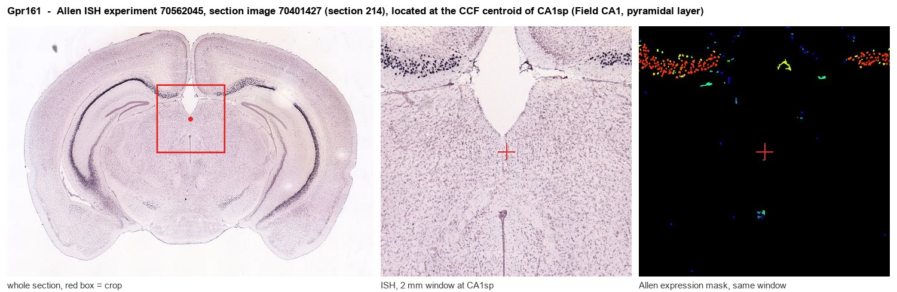

Gpr161
G protein-coupled receptor 161
Spatial tier: RESTRICTED · Class: GPCR · Top region: CA1sp (Field CA1, pyramidal layer) · Positive regions: 13/554
43.8Discovery Score
42.8Targetability Score
CEvidence grade C
What this means: Gpr161: fine CCF profile is restricted toward CA1sp (top regions: CA1sp, CA2sp, CA1so, CA1sr, CA2so; 13 positive regions); direct spatial validation is still required.
Function in CA1sp: evidence, prediction, innovation
- Gene function
- GPR161 is a ciliary orphan class A G-protein-coupled receptor that is constitutively coupled to Gs. It raises cAMP inside the primary cilium and also acts as an A-kinase anchoring protein, so it concentrates PKA activity locally and promotes processing of GLI3 into its transcriptional repressor form, thereby restraining Sonic hedgehog signalling. Hedgehog stimulation causes GPR161 to exit the cilium, relieving this brake; sterols regulate its basal activity.
- Region function
- The CA1 pyramidal layer is the principal output stage of the hippocampus, integrating CA3 Schaffer-collateral and entorhinal layer-III input; it houses place cells and generates the sharp-wave ripples that support episodic memory consolidation.
- Published in this region
- expression only Expression is documented but function is not. Mukhopadhyay et al. 2013 reported that Gpr161 is present in virtually all cilia of cultured embryonic mouse hippocampal neurons and is broadly detected in the cilia of CA1 and CA2 pyramidal neurons in adult mouse hippocampus. Paillard et al. 2025 showed that ciliary GPR161 mechanosensitivity drives saltatory migration of developing neurons, and Shimada et al. 2019 found forebrain and ventricular abnormalities after Gpr161 deletion, but no study has manipulated GPR161 in mature CA1.
- Predicted function
- Prediction: in mature CA1 pyramidal neurons the primary cilium is a signalling antenna rather than a motility organelle, so GPR161 is predicted to set the tonic ciliary cAMP/PKA tone that governs activity-dependent gene expression and the threshold for hedgehog-dependent plasticity. Conditional deletion of Gpr161 with Camk2a-Cre should derepress GLI-dependent transcription in CA1, lower the threshold for LTP and alter place-field stability and contextual fear memory without gross anatomical change; the phenotype should be occluded by downstream Smoothened antagonists such as vismodegib.
- Innovation
- ★★★★☆ 4/5 The protein is documented in adult CA1 cilia and floxed alleles exist, yet no one has tested what ciliary cAMP signalling does for hippocampal function.
- Tools
- Gpr161 floxed mice (Mukhopadhyay lab) and the Gpr161 vacuolated-lens null allele; Camk2a-Cre and Grik4-Cre for hippocampal deletion; anti-GPR161 antibodies; pathway manipulation with Smoothened agonist SAG and antagonist vismodegib; ciliary cAMP sensors (cilia-targeted cADDis, 5HT6-mCherry).
- References
Direct evidence located at the region

Allen ISH experiment 70562045, section image 70401427 (section 214): the section that contains the CCF centroid of Field CA1, pyramidal layer according to the Allen image-to-atlas alignment (reference_to_image), with a 2 mm window around that point. Left: whole section, red box = window. Middle: ISH signal. Right: Allen's expression-mask view of the same window. open this image in the Allen viewer
Look it up yourself: Allen Mouse Brain ISH for Gpr161Allen reference atlas: CA1sp (structure 407)ABC Atlas MERFISH viewer(in the ABC Atlas choose dataset MERFISH-C57BL6J-638850-CCF, colour cells by gene "Gpr161" or by parcellation_substructure "CA1sp")All genes confined to CA1sp + 3-D brain
Direct spatial evidence
MERFISH REGION LOCATOR

Regional expression figure

Predicted WMB × fine-CCF profile; not direct full-transcriptome spatial measurement.
Spatial profile
Evidence and specificity
- Evidence status
- PREDICTED_FINE
- Direct sources
- None; predicted localization only
- Exclusive threshold
- 12 positive regions out of 554
- Spatial specificity
- 0.345
- Top-region fraction
- 0.077
- Filter status
- PASS
Interpretation limits
- Cell-type-to-region projection is imputed expression, not direct spatial measurement.
- Adult reference atlases do not establish stability across age, sex, strain, state, or disease.
- Transcript abundance does not guarantee protein abundance or genetic-tool performance.